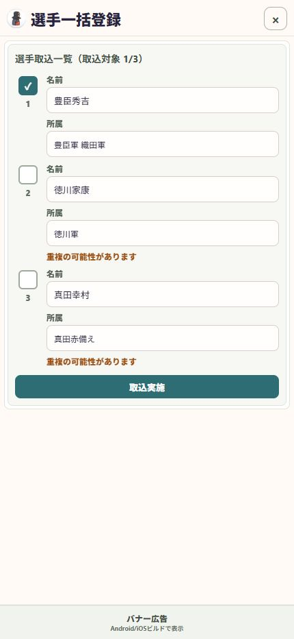

04 / 準備する
読み取った名簿を登録する
文字を読み取っただけでは登録は完了しません。表で確認してから取り込みます。
操作の入口選手一括登録 → 選手一覧を表に取り込む
一覧を表にする
入力した文字を確認し、「選手一覧を表に取り込む」を押します。
氏名と所属を確認する
豊臣秀吉の所属が「豊臣軍」「織田軍」のように、正しい欄に分かれているか確認します。表の中でも修正できます。
重複候補を見直す
「重複の可能性があります」と出た行は、初期状態で取込対象から外れます。既存の選手と同じ人か確認します。
対象を選び、登録する
取り込む行のチェックと件数を確認し、「取込実施」へ進みます。完了後は選手一覧で確認します。

